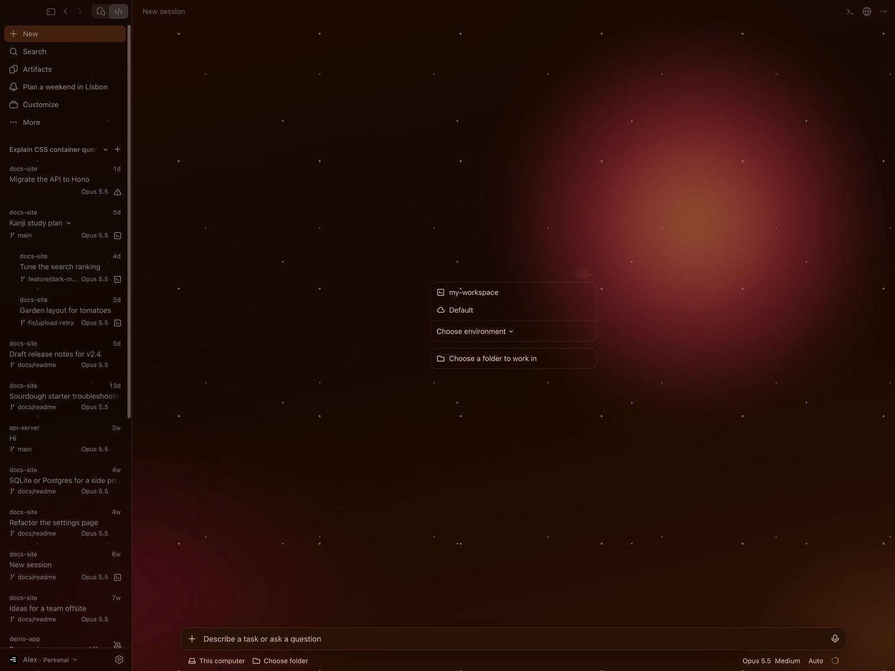
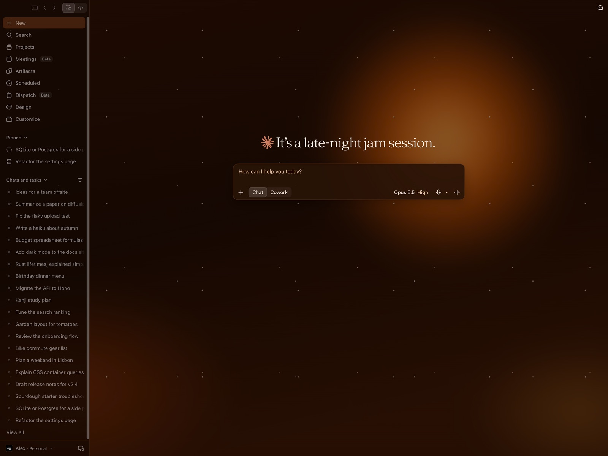
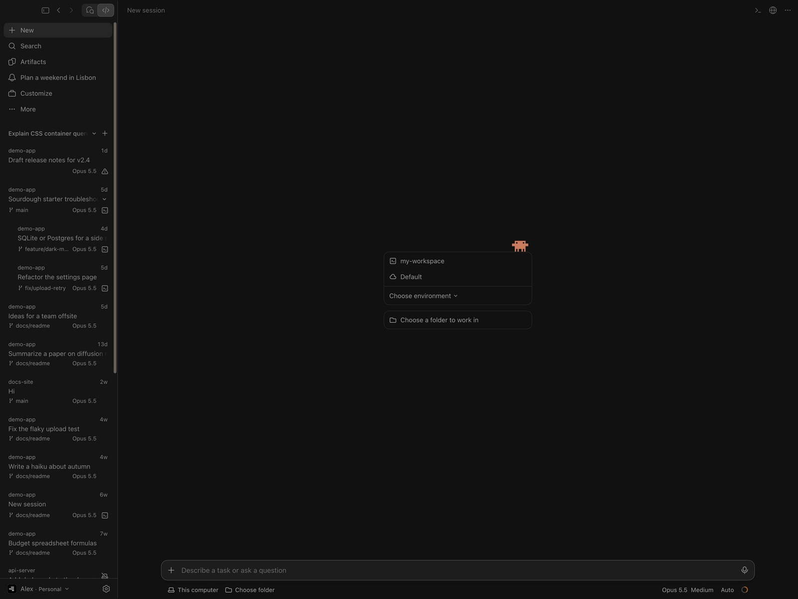
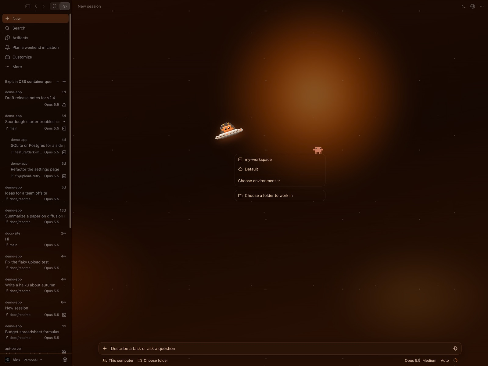

Your own look for the Claude app
Cinnamon adds themes and small extensions to the Claude desktop app on your Mac, and to claude.ai in your browser. Pick them from the menu bar, in Claude's own Settings, or just ask Claude to make one.
$ brew install --cask naveengovind/tap/cinnamon
The menu bar app and the
cinnamon command. macOS 13 or later, signed and notarized.



Ember in the Code tab. The sun drifts slowly; the sidebar cards are an extension.